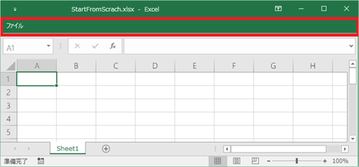
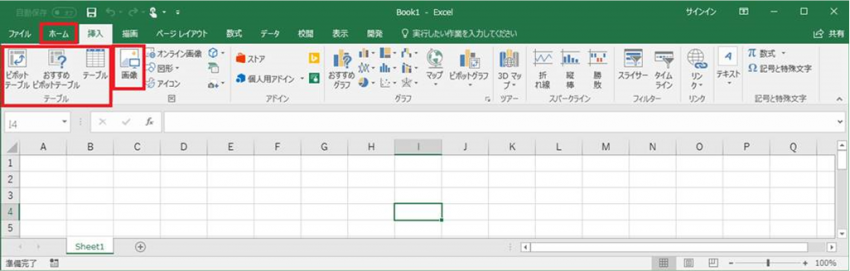
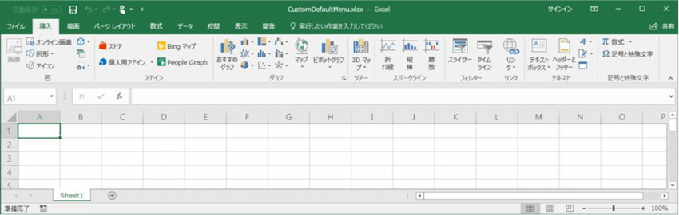

(※ 2017 年 11 月 6 日に Japan Office Developer Support Blog に公開した情報のアーカイブです。)
こんにちは、Office 開発サポート チームの中村です。
本テーマについて、前回の投稿から時間が空いてしまい申し訳ありません。
ここまでの記事では、カスタムのリボン タブを作成するというカスタマイズ内容を例に、カスタマイズ手法についてご紹介してきました。今回の記事からは、この他によく行われるカスタマイズの実装方法をいくつか紹介しつつ、XML などの書き方のイメージを掴んでいただればと思います。
今回の投稿で紹介する方法は、1. を除いて VSTO のビジュアルなデザイナーではカスタマイズできない内容となりますので、XML を利用して実装します。VSTO のビジュアルなデザイナーでカスタマイズしている方で以下の方法を利用したい場合は、以前の投稿の例でも行っていたように、ビジュアルなデザイナーで作成したリボンを XML へエクスポートできます。
目次
はじめに : 開発時に便利な機能
Office で以下のオプションを有効にすると、リボン カスタマイズ用の XML の記述エラーをハンドリングすることができます。
無視して問題ないエラーも通知されるため、運用上はお勧めしませんが、開発時にはこのオプションを有効にしておくと実装上の問題点を確認しやすくなります。
<該当の設定項目>
[ファイル] タブ - [オプション] – [詳細設定] – [全般] セクション – [アドイン ユーザー インターフェイスに関するエラーを表示する]
1. 既存のタブをすべて表示しない方法
アプリケーション経由で Excel ファイルを操作して、ユーザーに自由な編集を極力させたくない場合などに利用される方法です。
リボン クラスに用意されている StartFromScratch プロパティを利用します。この方法を用いると、[ファイル] タブ以外の全てのタブと、クイック アクセス ツールバーのアイコンを非表示にできます。
記述方法は非常にシンプルです。
1 | <customui xmlns="http://schemas.microsoft.com/office/2009/07/customui"> |
タイトル : Ribbon.StartFromScratch property
ビジュアルなデザイナーで設定する場合は、リボン全体を選択した状態で [プロパティ] ウィンドウの [動作] グループに [StartFromScratch] プロパティがありますので、これを True に設定します。
この設定を行ったファイルを開くと、以下のようになり [ファイル] タブだけが表示されます。

図 1. StartFromScrach によるカスタマイズ後の状態
この設定を行っても、右クリック メニューは使用できます。これらも禁止したい場合は、合わせてカスタマイズしてください。(右クリック メニューのカスタマイズは次の投稿で紹介予定です。)
いったんこの設定で既定のタブはすべて非表示にした状態で、合わせてカスタム タブの定義を追加することで、ユーザーに利用させたいメニューだけを表示するといった運用も可能です。
2. 既存のリボン メニューを無効化する方法
1. のようにすべての既存メニューを利用できないようにしたいわけではないけれど、一部のタブやグループを非表示 / 無効化したい、という場合は、対象項目の visible プロパティを false に指定します。
以下の例では、ribbon クラス で [ホーム] タブを非表示にし、かつ、[挿入] タブ内の [テーブル] グループを非表示にしています。また、command クラスを利用して [画像] メニューを無効化しています。(なお、既定グループ内の一部メニューだけを非表示にすることはできません。この場合は、グループ全体を非表示にした後、必要なメニューのみを含むグループを独自に追加してください。)
1 | <customUI xmlns="http://schemas.microsoft.com/office/2009/07/customui"> |
<既定の状態>

図 2. 既定の [挿入] タブのメニュー
<カスタム XML を読み込んだ状態>

図 3. カスタマイズ後の [挿入] タブのメニュー
TIPS 1 : コントロール、グループ、タブ名の確認方法
組み込みメニューのコントロ―ル名は、以下に一覧が用意されています。
タイトル : Office 2010 Help Files: Office Fluent User Interface Control Identifiers
アドレス : https://www.microsoft.com/en-us/download/details.aspx?id=6627
タイトル : Office 2013 Help Files: Office Fluent User Interface Control Identifiers
アドレス : https://www.microsoft.com/en-us/download/details.aspx?id=36798
タイトル : Office 2016 Help Files: Office Fluent User Interface Control Identifiers
アドレス : https://www.microsoft.com/en-us/download/details.aspx?id=50745
[ファイル] タブ – [オプション] – [リボンのユーザー設定] でメニューの一覧を表示してマウス ポインタを項目の上に移動すると、ツールチップでコントロール名を確認することができます。
特定のメニューを制御したい場合に、まず [リボンのユーザー設定] でメニュー名を確認して、コントロール一覧からこれを探し、対象のメニューが含まれるグループ名やタブ名を探す、といった流れでこれらの情報を活用して XML を記述してみてください。
TIPS 2 : 他のリボン カスタマイズ方法
既存のメニューのカスタマイズについては、XML やビジュアルなデザイナーでのリボンのカスタマイズ以外に、以下のような方法も検討できます。
- オプションの [リボンのユーザー設定] でカスタマイズする
- Office グループポリシー テンプレートで制御する (※)
※ 各アプリケーションの [ユーザーインタフェイスの項目を無効にする] に定義済みの項目があります。その他、グループポリシーで機能を無効化する設定によってメニューがグレーアウトされるものもあります。 さらに、[ユーザー設定] 項目を利用すると、コントロール ID (TIPS 1 に記載の一覧で確認できます) で任意のメニューを無効化できます。
XML で既存メニューのカスタマイズを行う用途としては、上記の方法が利用できないようなシナリオとして以下のような状況が想定されます。
- 特定のファイルを開いたときだけカスタマイズしたい
- 何らかの操作に応じて動的にメニューの状態を変更したい (次回投稿で実装方法について説明予定です。)
今回は、2 つのカスタマイズ方法を紹介してみました。ここでは無効化に関する visible や enabled プロパティのカスタマイズを紹介しましたが、その他のプロパティについてもカスタマイズできますので、以下のリファレンスなどを参考に利用できるプロパティを確認してみてください。
タイトル : 2007 Office Fluent リボンをカスタマイズする (開発者向け) (パート 2/3)
アドレス : https://msdn.microsoft.com/ja-jp/library/aa338199(v=office.12).aspx
タイトル : DocumentFormat.OpenXml.Office2010.CustomUI namespace
アドレス : https://msdn.microsoft.com/en-us/library/office/documentformat.openxml.office2010.customui.aspx
次回はもう少し複雑な条件でのリボン カスタマイズや、xls ファイルのカスタマイズをしたい場合の方法にについて紹介します。
今回の投稿は以上です。
本情報の内容 (添付文書、リンク先などを含む) は、作成日時点でのものであり、予告なく変更される場合があります。